The effects
The three effects tabs hold 27 effects. Each is one recipe entry with its parameters in the order of its panel's controls, and each is a small, exactly specified transformation of the pixels. This chapter gives, for every effect, the formula, the ranges and defaults, and a real render.
What every effect shares
All effects run in the renderer after the geometry (straighten, crop and the scale to the render size) and before the recipe's rotations and flips, in the order you applied them. You can apply the same effect several times; each entry is its own step. The rules below hold for every one of them.
- Working values
- The renderer works on 32-bit floats per channel, sRGB-encoded, from 0 to 1, in bands of rows run in parallel. Most effects compute on those encoded values directly. A few convert to linear light first because their formula is about light (Warmify, Saturation above 0, Boost, Vignette), through shared 4,096-step tables of the sRGB curve (within 0.01 of a level of the exact curve).
- Fusing
- Consecutive operations that read only their own pixel (B&W, Sepia, Tint, Invert Colors, Duo-Tone, Infrared Film, Boost, Focal B&W, Graduated Tint and the like) run fused on one band and are rounded to 8 bits once. An operation that reads its neighbours (a blur, Sharpen, Pixelate) starts a new run.
- Sizes
- Every size is relative to the stored photo's shorter side: the focal circles' Size as a fraction of it (0.3 is a radius of 30 %), Glow's Radius in percent, and HDR Look's Radius, Dream Glow's Bloom, Pixelate's cells, Border's and Museum Matte's bands and Drop Shadow's Distance and Blur in thousandths. Vignette's Size is in percent of the half-diagonal. So a 256-pixel thumbnail, the edit view and a full-size Save of the same recipe agree; a large render shrunk matches a small one.
- Points and angles
- Crosshair points are normalized
x,yin the stored frame (after EXIF orientation, before Dalíca's rotations and flips), brought into 0..1. Angles are degrees 0 to 360, clockwise from pointing up. A later rotation or flip never rewrites them. - Fade
- On most of the newer effects, Fade 0 to 100 blends the result back toward the effect's input:
out = in + (effect − in) · (1 − Fade/100). Fade 100 changes nothing. - Noise
- Grain (Film Grain, Plastic Lens, Widescreen Film) is smooth value noise placed in the stored frame and seeded by a hash of the entry's parameter text (Widescreen Film's by the effect's name), mean 0 and standard deviation 1 before its amount. The same point has the same noise in every render.
- Wide blurs
- The large blurs (Soft Focus, Glow, HDR Look, Dream Glow, Plastic Lens, Soften) are made once per render on a coarse grid of cell means about a third of the sigma, blurred by three box passes, and read back bilinearly, so their cost stays near the picture's size whatever the radius. A zoomed region render equals that window of the whole render.
How an entry is written
Numbers are plain decimals, printed as the shortest text that reads back (0.6, 20); a number out of range is brought to the nearest end when read. Colors are #rrggbb, read in either case and written in lowercase. Checkboxes are true or false; choices are words (normal, soft_light). A NaN, a missing or extra field, a bad color or an unknown word leaves the entry in the recipe as written and skips it when rendering, like any operation Dalíca cannot read, so nothing after it is lost.
# tab 3, defaults
sharpen(0.6) grain(10,false) tint(#80cfff,0) soft_focus(0.5,0.5,0.3,0.5)
# several entries, applied left to right
autofix()|vignette(35,1.4,#000000,0)|border(#000000,20,#ffffff,5,0,0)About the pictures: every picture in this chapter is a real render of the recipe under it, made by Dalíca's own command-line tool from the openly licensed sample photos, 700 pixels on the longer side (Sharpen and Film Grain show 1:1 crops of a full-size render, since they are about single pixels).
Effects
The first effects tab, in grid order: Sharpen, Sepia, B&W, Warmify, Film Grain, Tint, Saturation, Soft Focus, Glow, Filtered B&W, Focal B&W, Graduated Tint. Sepia, B&W and Warmify apply in one click.
Sharpen
sharpen(a)
An unsharp mask: out = in + a · (in − blur(in)), with no threshold. Amount 0 to 3, default 0.6. The blur is a sampled Gaussian of sigma 0.0004 of the stored photo's shorter side (about 1.2 pixels on a 12-megapixel photo), its taps in a fixed order, so a zoomed region at 1:1 equals that window of the whole render exactly. That is why the spec calls it accurate at 1:1. Below 1:1 the sigma would fall under half a pixel, so a render that small (a tile, a thumbnail) sharpens at 0.5 pixel of its own instead: an approximation, close to the full render shrunk.
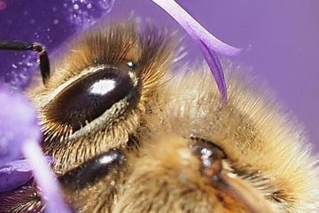
Original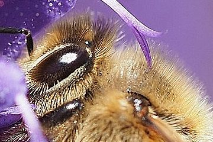
sharpen(3)Sepia, B&W and Warmify
sepia() · bw() · warmify()
The three one-click color effects take no parameters.
- B&W is the Rec.601 luma of the encoded values:
l = 0.299 R + 0.587 G + 0.114 Bin every channel. - Sepia takes that luma through three fixed curves,
R = l^0.75,G = l^0.95,B = l^1.35(chart at the end of this chapter). Since the powers rise from red to blue, R ≥ G ≥ B everywhere: every gray becomes warm brown, black stays black, white stays white, and a brighter pixel never comes out darker. - Warmify is a warming photo filter, the color
#ec8a00at 25 % density, applied in linear light as one 3 × 3 matrix (to D50 XYZ, each component scaled by the filter's share of white, back to RGB, normalized so the luminance Y stays). Then the input's Rec.601 luma is put back with a luminosity blend. Oranges and skin turn golden, blues lose a little, the brightness stays.
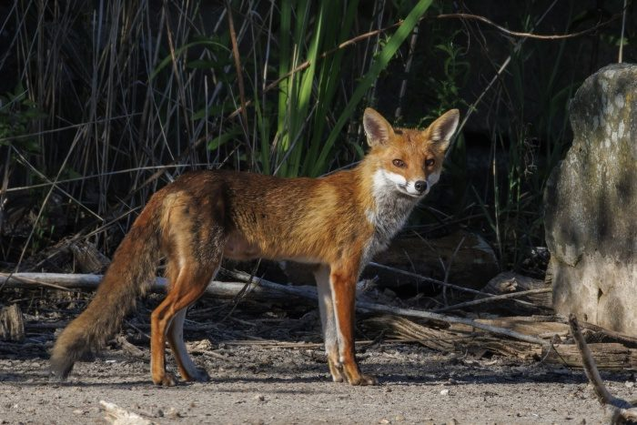
Original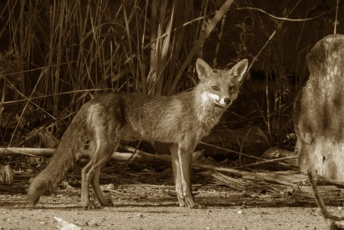
sepia()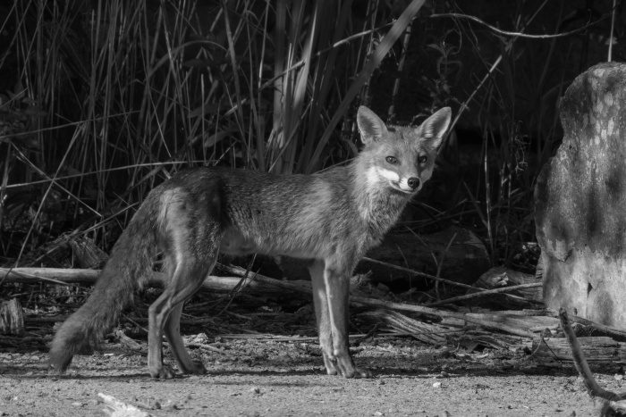
bw()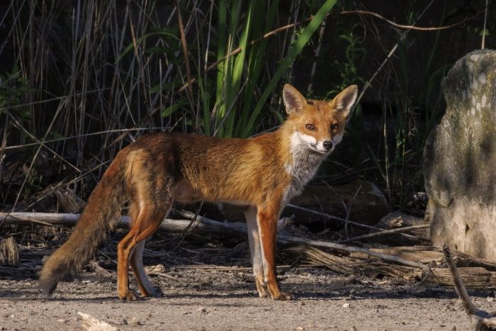
warmify()Film Grain
grain(grain,lighten)
Monochrome grain: one noise value added to all three channels of a pixel, so the grain never changes R − G or any other color difference. Grain 0 to 50, default 10; Lighten false by default. The noise is smooth value noise on a lattice of cells 0.0005 of the shorter side (about 1.5 pixels on a 12-megapixel photo), seeded from the entry's own parameter text and placed in the stored frame, so the same grain lands on the same spot in a thumbnail and in a Save, and two entries with the same parameters draw the same grain. Its standard deviation is Grain / 100 · 0.5 / √3, which is uniform noise of ±Grain/200. With Lighten only the light half of the noise is added, max(n, 0), so the picture only gets lighter. Where a small render's pixel covers several cells the grain fades as averaging would make it, but never below a quarter of its variation, so a tile still shows grain.
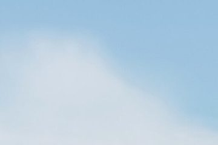
Original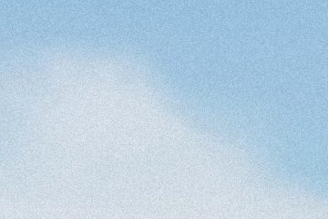
grain(10,false)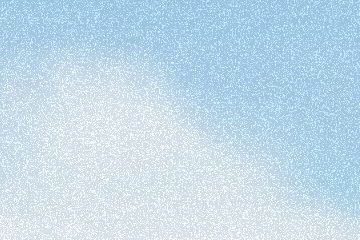
grain(40,true)Tint
tint(color,fade)
Desaturate to the Rec.601 luma, then colorize along a path from black to the tint (at the tint's own luma) to white, straight lines between: a pixel of luma l below the tint's luma lt gets l + (l / lt) · (tint − lt), one above it l + ((1 − l) / (1 − lt)) · (tint − lt). Every pixel takes the tint's hue and keeps its luma. Color default #80cfff; Fade 0 to 100, default 0. The code notes why it does not use the usual HSL colorize: at full saturation that doubles a channel's contrast and folds at mid-gray, so a thumbnail and a full render of the same edge would disagree. The straight lines keep both slopes near 1.
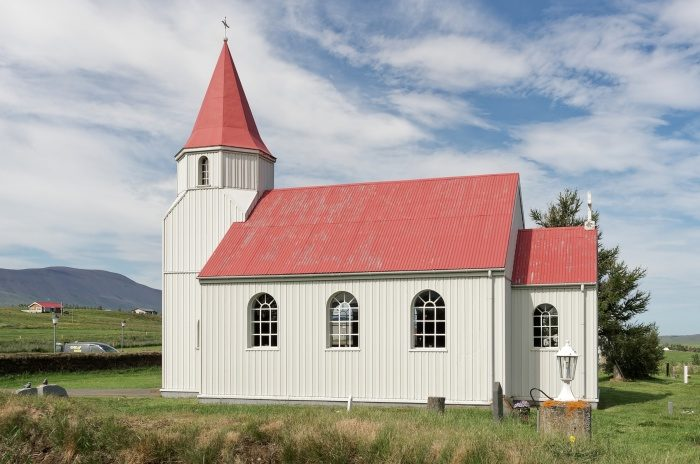
Original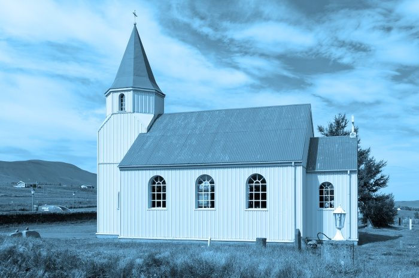
tint(#80cfff,0)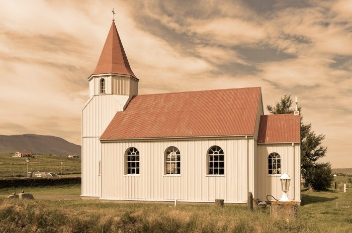
tint(#ffb060,40)Saturation
saturation(a)
Amount −1 to +1, default 0.16. Below 0 every pixel moves toward its Rec.601 luma by the amount: out = l + (p − l)(1 + a), so −1 is plain B&W. Above 0 it is Vibrance in linear light, not a plain scale: in the pixel's HSV terms (saturation t = 1 − min/max, value V = max) the boost is largest for dull colors (low t) and darker values, fades to nothing at full saturation, and is damped on reds and skin (HSV hue 0 to 30°, fading out by 45° and back in from 300°). The hue is kept; the boost's constants are fitted to measurements.
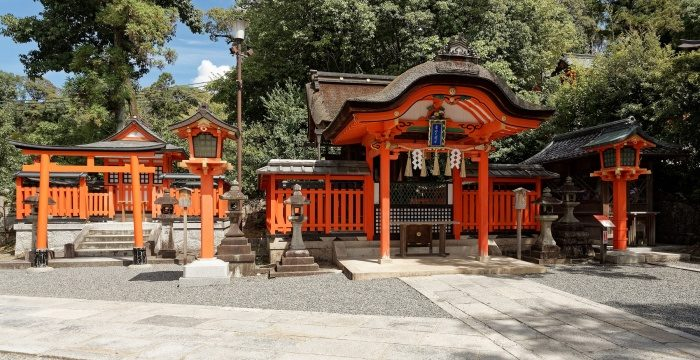
Original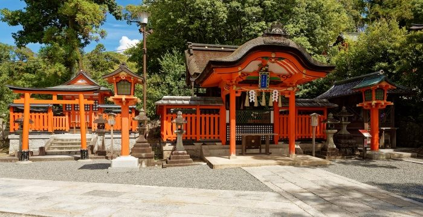
saturation(1)Soft Focus
soft_focus(x,y,size,amount)
Blur outside a sharp circle. The crosshair x,y is a stored-frame point (default the centre); Size 0 to 1 (0.3) is the circle's radius as a fraction of the shorter side; Amount 0 to 1 (0.5) scales the blur, a Gaussian of sigma Amount × 0.015 of the shorter side. The picture is sharp out to Size and fully blurred at Size × 1.5, with a smooth ramp between. The blur is made once per render on a coarse grid of cell means (cells about a third of the sigma) and read back bilinearly, with the variance that averaging adds taken off the sigma, so every render size blurs alike; inside the sharp core the blur is never read.
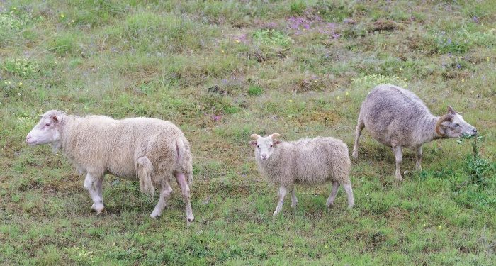
Original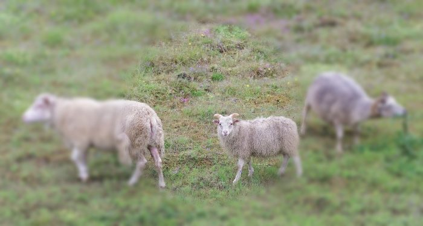
soft_focus(0.5,0.5,0.3,0.5)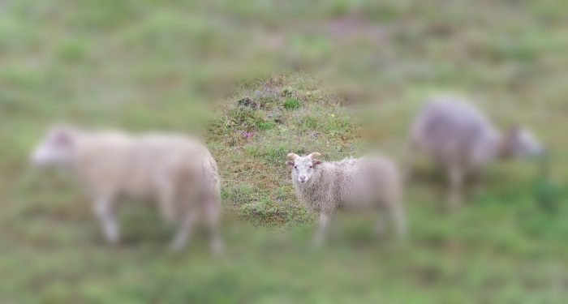
soft_focus(0.5,0.5,0.2,1)Glow
glow(i,r)
The highlights bloom. Each pixel is first weighted by a smoothstep of its luma from 0.5 to 1 (so only the brighter half of the tones feeds the glow), that highlight layer is blurred by a Gaussian of sigma Radius percent of the shorter side, then screened onto the picture by Intensity: out = p + t(1 − p) with t = Intensity × glow. A screen never darkens a pixel, and a picture darker than luma 0.5 everywhere is left exactly as it was. Intensity 0 to 1 (0.65); Radius 0.3 to 30 (3), on a logarithmic slider.
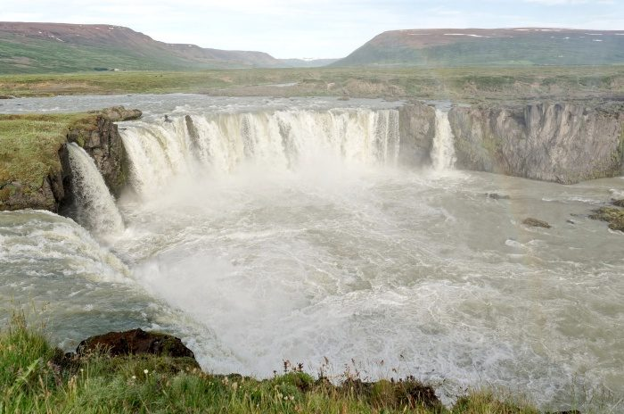
Original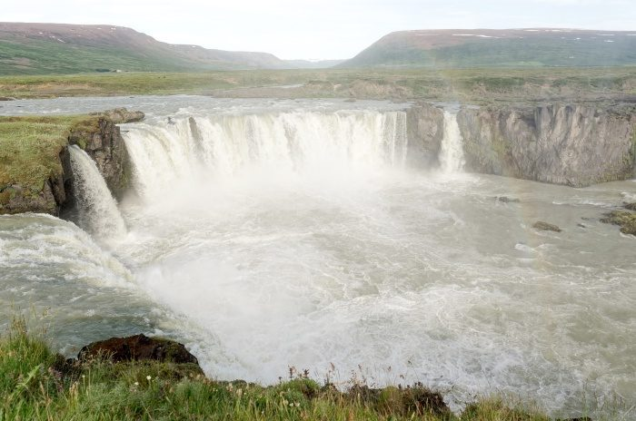
glow(0.65,3)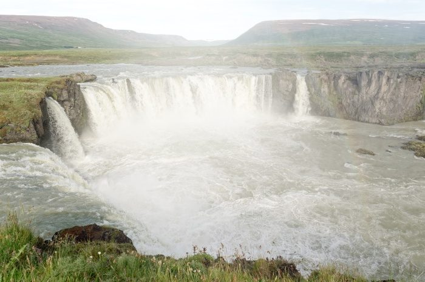
glow(1,10)Filtered B&W
filtered_bw(color)
B&W as seen through a colored filter on the lens. The Rec.601 weights are each multiplied by the filter's transmission of that channel and normalized to sum to 1, so a neutral gray stays the same gray. The default filter #ff8000 (orange) gives weights of 0.50, 0.50 and 0 for red, green and blue (instead of 0.30, 0.59 and 0.11): blue skies go darker, reds and skin lighter. The blue filter #0080ff gives 0, 0.72 and 0.28 and does the opposite. A black filter transmits nothing and falls back to plain B&W.
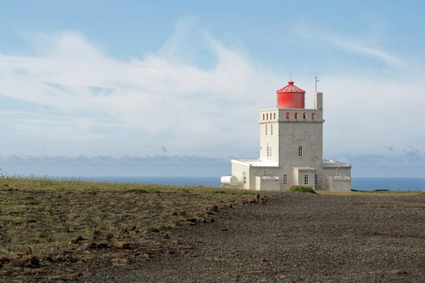
Original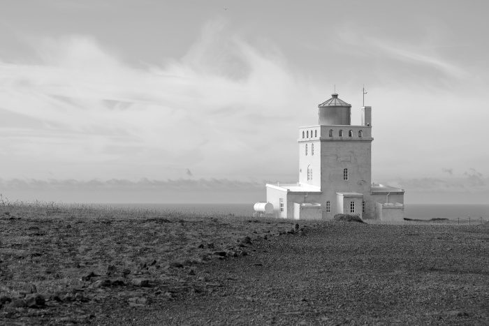
bw()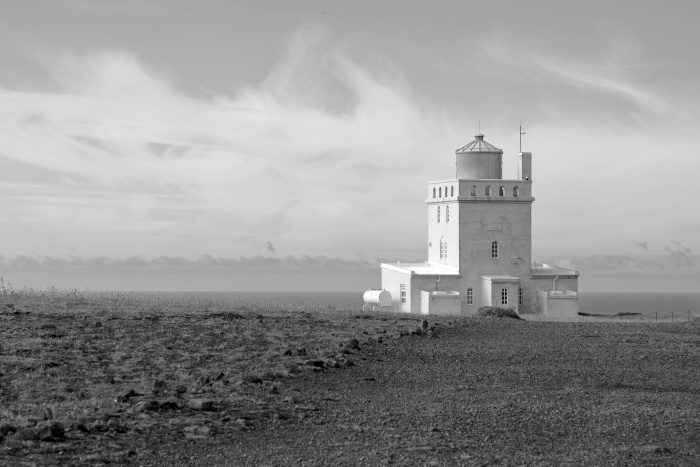
filtered_bw(#ff8000)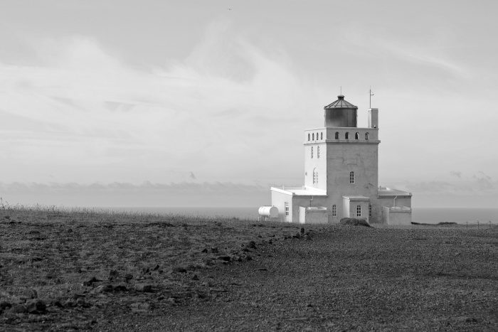
filtered_bw(#0080ff)Focal B&W
focal_bw(x,y,size,sharpness)
Color inside a circle, the Rec.601 gray outside. Centre x,y (default 0.5, 0.5); Size 0 to 1 (0.3) as in Soft Focus; Sharpness 0 to 1 (0.5) sets the edge, which fades over (1 − Sharpness) × Size (one output pixel at Sharpness 1). It reads only its own pixel, so it is cheap and fuses with neighbouring pixel operations.
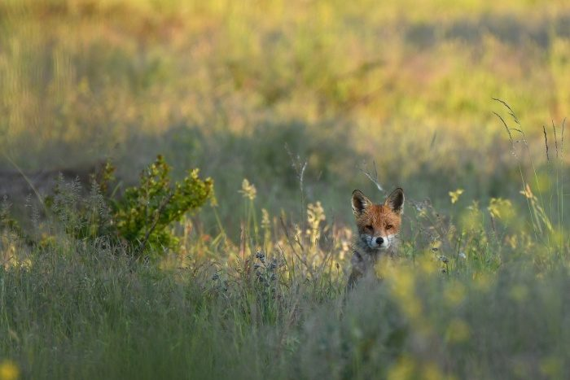
Original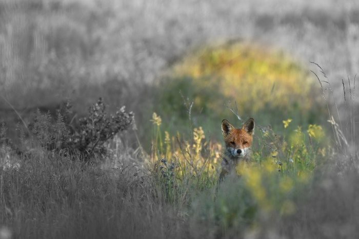
focal_bw(0.66,0.57,0.3,0.5)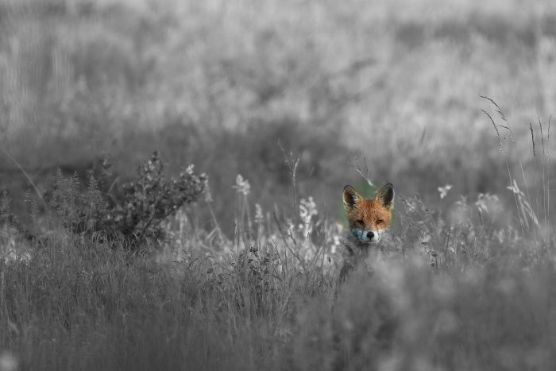
focal_bw(0.66,0.57,0.08,1)Graduated Tint
graduated_tint(x,y,angle,feather,shade,color)
A colored gradient, as a graduated filter puts on a sky. From the start point x,y along Angle (0 to 360, default 0, measured clockwise from pointing up, so 0 tints the top), the tint ramps in over Feather (0 to 1, default 0.25, a fraction of the shorter side). Ahead of the ramp the color is multiplied in: each channel's gain is 1 − depth · (1 − c), with depth = 0.2 + 0.8 · Shade (Shade 0 to 1, default 0.25). Where the darkest channel of a pixel rises above 0.8 the tint is held back, fully at white, so white clouds stay white. Pixels behind the start are left exactly as they were. Color default #9cc8ff; white as the color changes nothing.
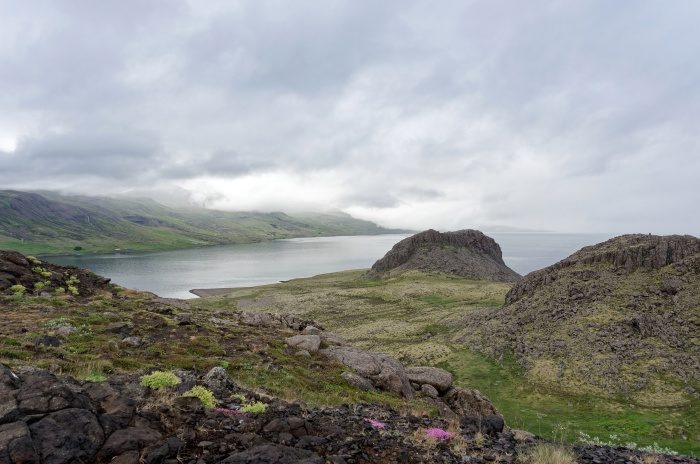
Original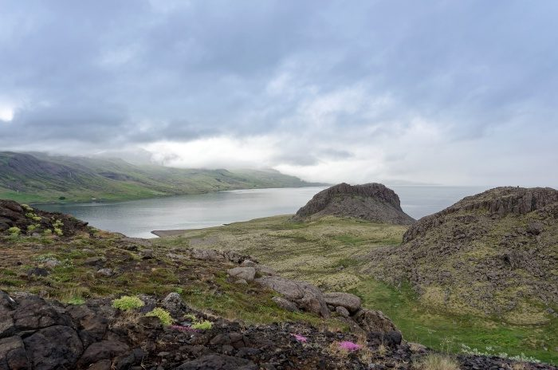
graduated_tint(0.5,0.5,0,0.25,0.25,#9cc8ff)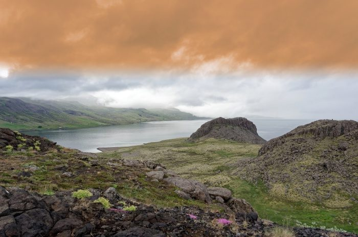
graduated_tint(0.5,0.35,0,0.1,1,#ffb070)More effects
The second tab: Infrared Film, Plastic Lens, HDR Look, Widescreen Film, Dream Glow, Invert Colors, Duo-Tone. Invert Colors applies in one click; Widescreen Film changes the picture's size.
Infrared Film
infrared(fade)
A black-and-white channel mix of the encoded values with weights red 0.3, green 1.3, blue −0.6. They sum to 1, so a gray stays the same gray, but foliage (green above blue) comes out much lighter than its luma and a blue sky much darker: the look of infrared film. Fade 0 to 100, default 0.
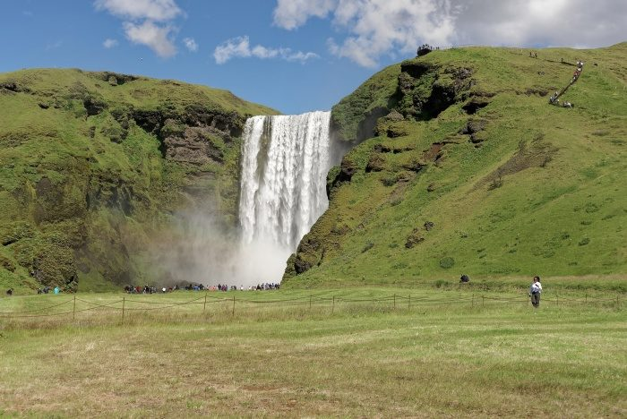
Original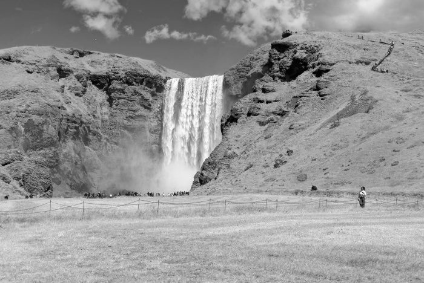
infrared(0)Plastic Lens
plastic_lens(blur,grain,fade)
The look of a cheap plastic camera, made of three parts that all follow the output picture (after the crop). Distance from the centre is measured on an ellipse through the corners, 0 at the centre and 1 in a corner, so it fits any shape. Soft edges: a Gaussian of sigma Blur Edges / 100 × 0.015 of the shorter side, mixed in from distance 0.3 to fully at the corners. Vignette: unchanged out to 0.4, darkened by up to 40 % in the corners. Grain: monochrome noise of standard deviation Grain / 100 × 0.15 on cells of 0.0012 of the shorter side, seeded by the entry. Blur Edges 0 to 100 (70), Grain 0 to 100 (30), Fade (0).
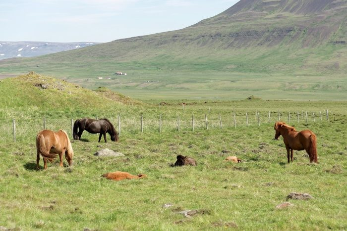
Original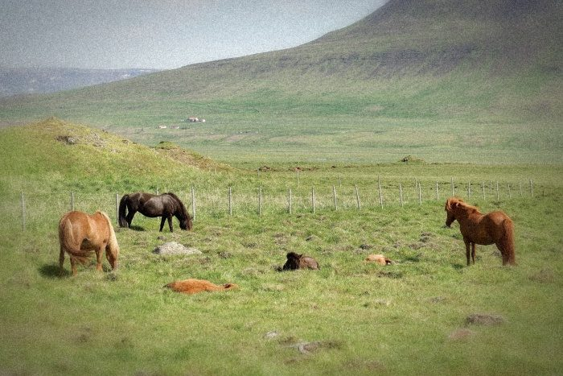
plastic_lens(70,30,0)HDR Look
hdr(radius,strength,fade)
Large-radius local contrast: out = in + C · (L − blur(L)) on the luma L, the same amount added to every channel, so local contrast rises without a color shift. Strength C 1 to 7 (3); Radius 1.3 to 80 (20) in thousandths of the shorter side, the sigma of the wide blur. The finest detail is left out of the boost: a blur of 0.0015 of the shorter side stands in for the photo in that difference, so the boost lifts shapes rather than grain and pixel edges, alike at every render size. The detail is eased into the room left to black or white, room · tanh(detail / room): small detail is added as it is, large detail approaches black or white without clipping, so a halo keeps its shape. Fade (0).
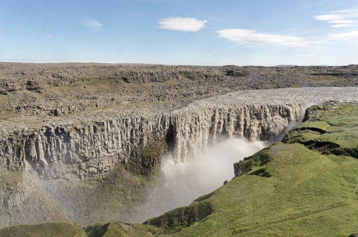
Original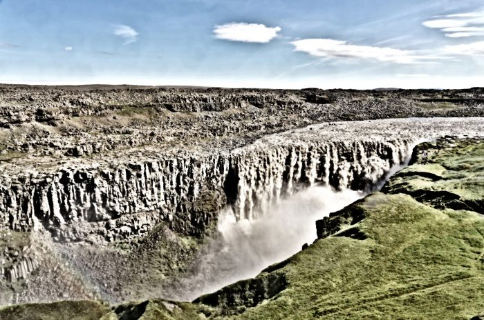
hdr(20,3,0)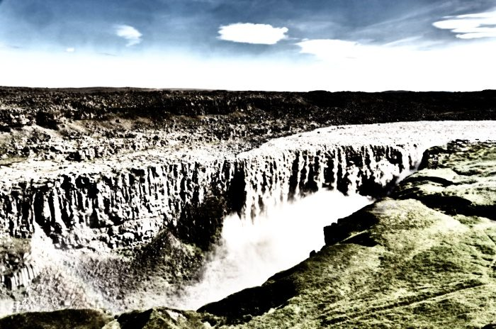
hdr(80,7,0)Widescreen Film
widescreen(letterbox)
A frame effect: it changes the picture's size. The picture is cropped about its centre to 1.7:1 (within a pixel), whatever its shape. Its color is then muted the way film stock is: saturation cut to 72 % around the luma, a gentle S-curve (a quarter of the way to a smoothstep), lifted blacks and softened whites (0.03 + 0.93 · v), and a split tone that shifts red up and blue down by (l − 0.5) × 0.06, so shadows go cool and highlights warm. A fine monochrome grain (standard deviation 0.03, cells 0.0012 of the shorter side) is seeded by the effect's name, so turning Letterbox on or off changes only the bars. Letterbox (true by default) paints black bars over the top and bottom 15 % of the crop, their inner edges anti-aliased.
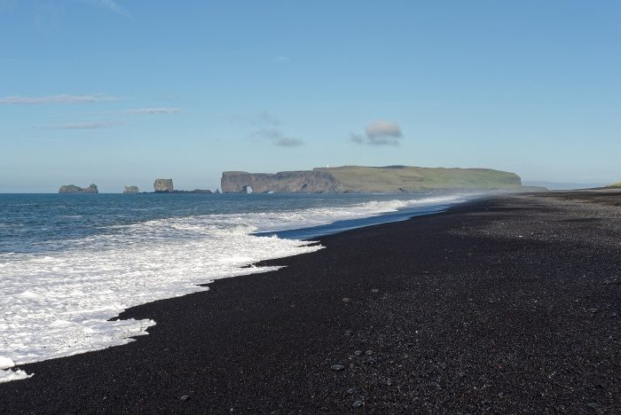
Original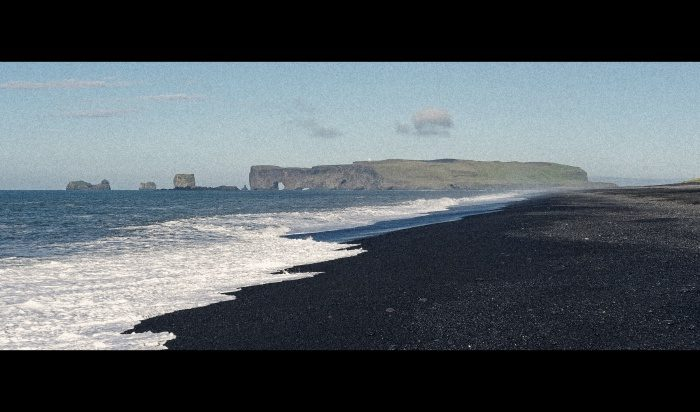
widescreen(true)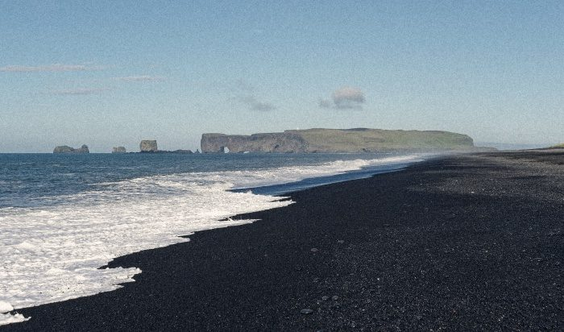
widescreen(false)Dream Glow
dream_glow(bloom,brightness,fade)
A blurred copy of the photo (Gaussian of sigma Bloom thousandths of the shorter side, 0 to 50, default 25) is blended over the photo in overlay mode, which deepens contrast and saturates; then a midtone lift v + l · v · (1 − v) with l = Brightness / 100 × 0.8 (Brightness 0 to 100, default 50) brightens the middle while black and white stay put. Fade (0).
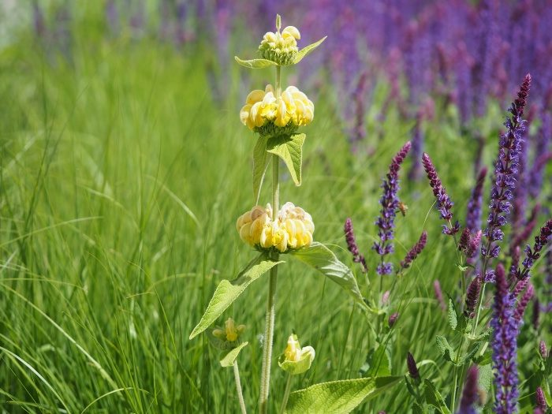
Original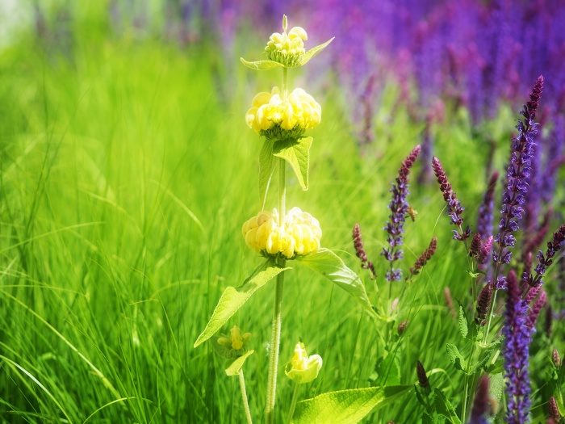
dream_glow(25,50,0)Invert Colors
invert()
Every channel becomes 1 − v on the encoded values. Applied twice it is the identity. Its use is turning a scanned negative into a positive.
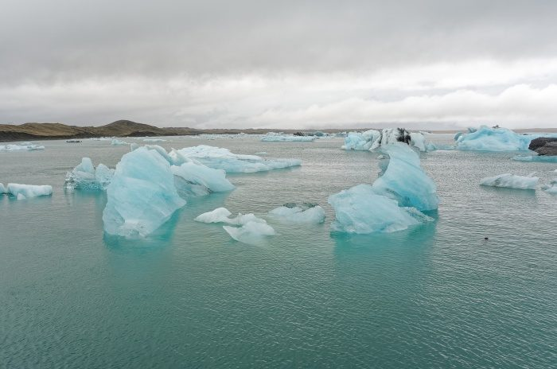
Original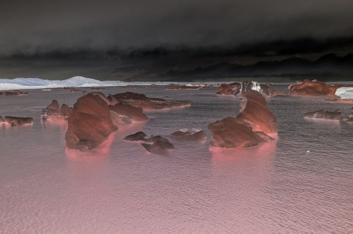
invert()Duo-Tone
duotone(first,second,brightness,contrast,fade)
The Rec.601 luma goes through two tone curves and is then mapped onto the straight line from the first color (at black) to the second (at white). Brightness −95 to 95 (0) is a power curve l^(2^(−b/50)) with black and white fixed: +95 lifts the midtones, −95 sinks them. Contrast 0 to 100 (20) is an S-curve with fixed ends and fixed mid-gray: a cubic Hermite on each half whose slope is 1 − c/128 at the ends and 1 + c/128 in the middle. First color #004488 (the shadows), second #ffff00 (the highlights). Fade (0).
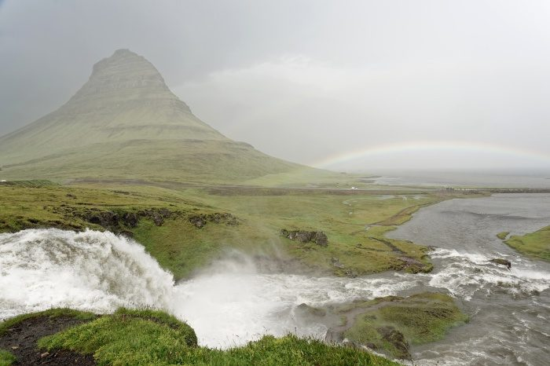
Original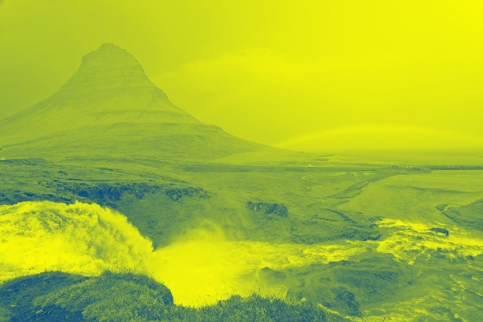
duotone(#004488,#ffff00,0,20,0)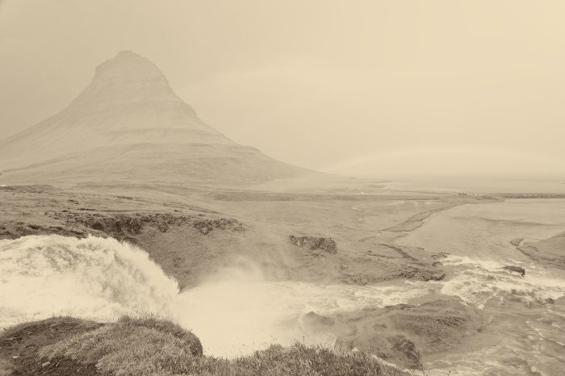
duotone(#2a1a10,#f0e0c0,30,60,0)Even more effects
The third tab: Boost, Soften, Vignette, Pixelate, Focal Zoom, Border, Drop Shadow, Museum Matte. Border, Drop Shadow and Museum Matte change the picture's size.
Boost
boost(strength)
Stronger color and contrast in one control, Strength 0 to 100 (50). First Vibrance in linear light by Strength / 100 (the same Vibrance as Saturation's positive half: dull colors gain most, reds and skin least), then each channel through the same S-curve as Duo-Tone's Contrast at Strength / 2 (so Boost 100 is contrast 50). Strength 0 is the identity.
Soften
soften(softness,fade;stroke;…)
A soft glow blur, everywhere or only where you paint. The photo is blurred by a Gaussian of sigma Softness / 100 × 0.03 of the shorter side; the blurred copy b is screened over the photo by Softness / 100 × 0.5 (g = b + (screen(p, b) − b) · glow), so detail melts, shadows lift a little and whites stay white; then out = p + (g − p) · k with k = (1 − Fade/100) × mask. Softness 0 to 100 (50), Fade 0 to 100 (50: half of the effect shows by default).
The strokes follow the two numbers, each after a ;: paint or erase, the brush radius (0.001 to 0.25 of the shorter side), then the stroke's points in the stored frame. Without strokes the mask is 1 everywhere. With strokes it starts at 0: round dabs with a feather of 0.5 are laid a quarter of the radius apart along each stroke, a paint stroke adds s · (1 − v) and an erase stroke takes v · s away, in order. At most 1,000 strokes of at most 4,096 points; an entry that would cost more than 228 units of painting work is painted on a grid halved until it fits. With strokes, the blur is computed only over the box the paint covers.
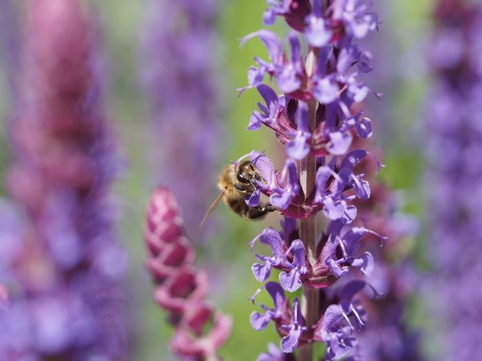
Original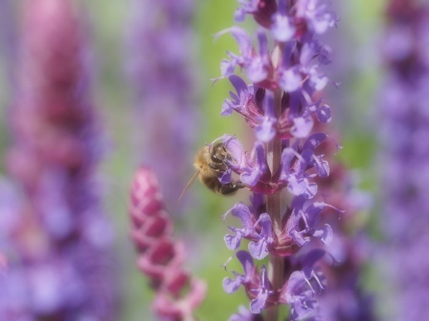
soften(50,50)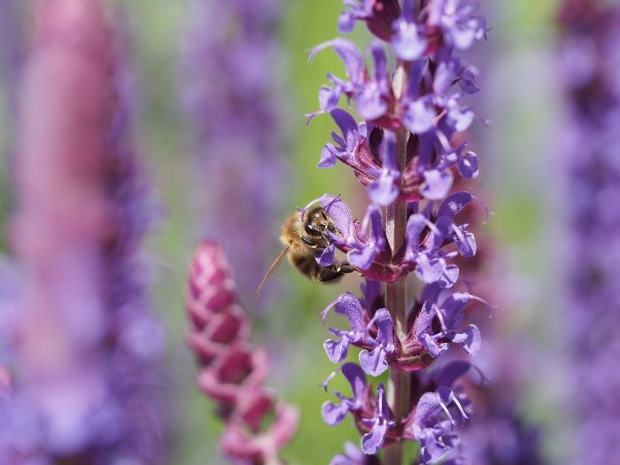
soften(100,0;paint,0.12,…;paint,0.12,…)Vignette
vignette(size,strength,color,fade)
Edges darkened, or taken toward any color. The distance of each pixel from the output picture's centre (after the crop) is measured as a fraction of the half-diagonal; a smooth ramp goes from 0 at 1 − Size/100 to 1 in the corners. The pixel moves toward the color, in linear light, by that ramp times Strength / 2: at the default 1.4 the corners go 70 % of the way, at 2 all of it. Size 0 to 50 (35, percent of the half-diagonal), Strength 1 to 2 (1.4), color #000000 (the panel can pick it from the photo), Fade (0). It is repeatable: a second Vignette compounds on the first. The untouched middle of each row is skipped without computing anything.
Pixelate
pixelate(size,mode,fade)
A mosaic. Square cells of Pixel Size / 1000 of the stored photo's shorter side (2 to 150, default 20), square to the output and anchored at the stored frame's top-left corner, so the cells sit on the same content in a thumbnail, a zoomed region and a Save, and stay put when you change the crop. Each cell's mean (exact integer sums of the 8-bit pixels, clipped at the picture's edges) is blended onto the picture with the chosen mode, normal, multiply, screen, overlay or soft_light (the W3C compositing formulas), then faded. Cells are at least one output pixel.
Focal Zoom
focal_zoom(x,y,size,amount,hardness,fade)
A radial zoom blur outside a sharp circle. Centre x,y in the stored frame (default 0.5, 0.5); Focal Size 0 to 1 (0.3) the circle's radius as a fraction of the shorter side; Zoom Amount 1 to 100 (50); Edge Hardness 0 to 100 (50); Fade (0). Outside the circle each pixel averages the picture along its ray toward the centre, back Zoom Amount / 200 of its distance (so at 100, half the way), each sample weighted by one over its distance as evenly scaled taps would be. The blur comes in over (1 − Hardness/100) × 0.5 of the shorter side beyond the circle. It is made once per render with running integer sums along rays at most a cell apart in four sectors around the centre, so a long box costs no more than a short one. Renders above 221 pixels (larger than 1920 × 1080) blur on a grid of 2 × 2-pixel cells read back bilinearly.
Border
border(outer_color,outer,inner_color,inner,radius,caption)
A frame effect. The canvas grows by the inner and then the outer band on every side, each thickness in thousandths of the shorter side of the picture it frames (0 to 100; defaults 20 outer in black, 5 inner in white), and by the caption height (0 to 200, default 0) below, in the outer color. The two bands together, and the caption, are rounded to whole pixels so the photo's pixels land on whole pixels and are copied unchanged; the line between the bands is anti-aliased. Corner radius (0 to 100, default 0) rounds the photo's opening with elliptic corners whose radii are that percentage of half the photo's width and height, so 100 makes an oval, anti-aliased by 4 × 4 samples along the curve.
Drop Shadow
drop_shadow(color,distance,angle,blur,fade,background)
A frame effect: the photo floats over a background. The canvas grows on every side by the shadow's Distance and Blur plus a gap of 25 thousandths, so the shadow never reaches the canvas's edge and every corner is background. The shadow is the photo's rectangle moved by Distance (0 to 30, default 15, thousandths of the shorter side) along Angle (0 to 360, default 90: to the right; clockwise from up) and blurred by a tent of half-width Blur (0 to 100, default 25). For a rectangle that blur separates into two closed-form profiles, one per column and one per row, instead of a blurred plane. Its opacity is 1 − Fade/100 (Fade default 30), blended over the background (default white) in the shadow color (default black).
Museum Matte
museum_matte(outer_color,outer,inner_color,inner)
A frame effect: a double mat. The canvas grows by the inner and then the outer mat on every side (thicknesses 0 to 100 in thousandths of the shorter side; defaults outer 25 in #1a0e03, inner 40 in #f0eae4). The outer mat is flat. The inner mat carries an inner shadow cast by the outer mat's edge, as if lit from the top left: the opening moved 6 thousandths down and right (at 135°) and blurred over 12 thousandths, at 55 % opacity at its darkest, both limited to the inner mat's thickness. It is repeatable: a second matte frames the first.
museum_matte(#3a3a3a,60,#d0c8b8,20). Look at the top-left inside edge of each inner mat for its shadow.The tone curves
Three of the curves above are fixed functions, plotted here from the formulas in the code.
Effects that change the picture's size
Widescreen Film, Border, Drop Shadow and Museum Matte are frames, a third kind of operation in the renderer. Each puts the picture as it stands at its place among the effects on a canvas of its own size, in whole pixels, and paints around it; the effects after it work on the whole canvas. So a Vignette after a Border darkens the border's corners, and a Vignette before it darkens the photo inside the border.
- Nothing stored changes: an effect's crosshair stays in the stored frame. To place it, the point is mapped through the crop and straighten onto the photo, then through each frame before it to where the frame put the photo.
- A frame's own bands are relative to the shorter side of the picture it frames; other effects' sizes stay relative to the stored photo, so a frame does not change a Vignette's scale.
- A later crop or straighten still applies to the photo (geometry comes first) and the frames keep their bands around it. A rotation or flip turns the framed picture.
- A frame whose canvas would pass the render limits at the source's resolution is skipped and kept in the recipe.
In the code
crates/edit/src/ops/detail.rs: Sharpen, Film Grain, Glow.crates/edit/src/ops/colour.rs: Sepia, B&W, Warmify, Tint, Saturation, Filtered B&W, and Vibrance.crates/edit/src/ops/focal.rs: Soft Focus, Focal B&W, Graduated Tint.crates/edit/src/ops/remap.rs: Invert Colors, Infrared Film, Duo-Tone, Boost, and the S-curve.crates/edit/src/ops/looks.rs: HDR Look, Dream Glow, Plastic Lens.crates/edit/src/ops/canvas.rs: Widescreen Film, Border.crates/edit/src/ops/mats.rs: Drop Shadow, Museum Matte.crates/edit/src/ops/soften.rs: Soften and its mask.crates/edit/src/ops/stylize.rs: Vignette, Pixelate, Focal Zoom.crates/edit/src/fx.rsandcrates/edit/src/fx/: blur, grid blur, noise, masks, brush, blend modes, luma and linear light.crates/edit/src/render.rs: working precision, fusing, frames.docs/editing.md§8 (8.1 to 8.5);docs/data-model.md§3.1 and §3.3.